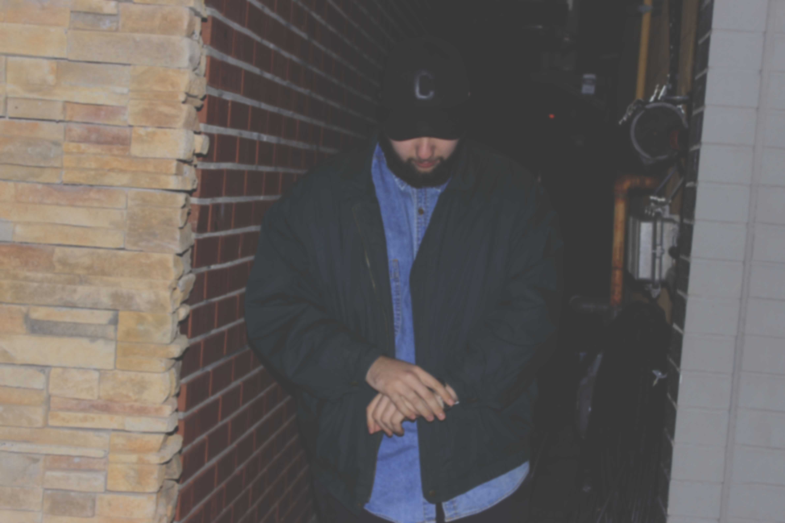

Veteran producer turned artist. Creating music, graphic art and even clothing as an outlet for mental health, for himself, and others who need the confidence to speak up. Zwicker’s shaking up the Ottawa scene with his unique sound and style unmatched by anyone else. This jack of all trades artist, can do it all. So, who’s Zwicker?
About Zwicker
